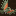
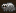
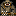

General info:
- All creatures can be milked twice as often as in vanilla.
- All poisonous/venomous creatures can be milked for their poison/venom.
- Many creatures give fleece when sheared, giving 3 units of cloth after spinning.
- Many creatures give pelts when butchered, giving furs after tanning.
- All animals give leather relative of their size. A cat gives 1, an oxen gives 7.
- All animals lay way, way less eggs.
Kobold Pets
Kobolds rely heavily on pets. None of them are grazers, so they are easy to handle. Honeybadgers take the place of guard dogs, keas can be bred for eggs, while jack rats are the source for leather that you need as buildmats. Trap spiders can give silk, and Ogres guard your entrance.
:::  Jack Rat ::: Price: 19::: Jack Rat ::: Price: 19:::
A fast breeding rodent that gives easy access to leather, meat and bones. Never embark without.
:::  Giant Jack Rat ::: Price: 151 ::: Giant Jack Rat ::: Price: 151 :::
The big brother of the jack rat, which is used by kobolds to pull caravans.
Special: Wagon puller and pack animal.
:::  Kea ::: Price: 13 :::
A small bird revered for its thieving. Kobolds can collect their eggs from nestboxes, or use them as early scouts.
Special: Giant keas and kea men are also available, and you can transform them in the Totem of the Kea.
:::  Honey Badger ::: Price: 26 :::
A fierce rodent that becomes enraged easily. Will attack much larger opponents, and can be war trained.
Special: Giant honey badgers and honey badger men are also available, and you can transform them in the Totem of the Badger.
:::  Psychotropic Toad ::: Price: 51 ::: Psychotropic Toad ::: Price: 51 :::
Toads give very special drink opportunities. Their extract carries over 50 syndromes which randomly affect kobolds that drink it. From good to bad, anything can happen.
Special: Can be milked for Toad Extracts, a very potent drink with random effects.
:::  Ogre ::: Price: 751 :::
Ogres are extremely large and powerful, but benign to your kobolds. They will actually adopt a single kobold as their owner. You can armor and upgrade them in the Ogre Pit.
:::  Armored Ogre ::: Price: 1001 ::: Armored Ogre ::: Price: 1001 :::
Armored versions have no actual items as armor, but a natural armor over their skin layer. Much more resilient in combat. You can create them from an Ogre and several armorpieces in the Ogre Pit.
Special: Iron-like armor.
:::  Fisher Gremlin ::: Price: 26 ::: Fisher Gremlin ::: Price: 26 :::
Fisher gremlins do what their name implies: They fish. Not much else to say.
Special: Does fishing labor, control this with declaring fishing zones.
::: Shalswar ::: Price: 26 :::
A small reptilian hunter; shalswars are mini-raptors. They hunt vermin and can be farmed for scale.
Special: Vermin hunter.
:::  Trap Spider ::: Price: 51 ::: Trap Spider ::: Price: 51 :::
Trap spiders can spray silk webs, making them both a source of cloth and thread, as well as a great way of defending your entrance. You can even make webbed traps. Mind that only 1/4 of your bolds are web-immune, so take care for friendly fire. The spiders themselves are very small and weak in close combat.
Special: Webber.
:::  Spirit Bear ::: Price: 1001 ::: Spirit Bear ::: Price: 1001 :::
Kobold druids can transform into spirit bears, but you can also buy them as a pet for your tribe. They are fierce fighters and have a supernatural armor.
Special: Steel-like aura.
Plump Helmet Men

- PHM can have between 1-10 children at a time, averaging 5 per female. If you're not careful, they may attain the majority so fast that you won't be able to bring down their numbers quickly enough.
- PHM will do a headcount of all non-PHM creatures in the immediate area. If they realize that they are the majority, they will rebel. It takes them about 1-2 weeks to figure out that they are the majority. This has no visible effect at first.
- A rebellious phase lasts for 1 week.
- Rebelling PHM will be intimidated by nearby creatures. They will usually not attack unless they outnumber their opponents.
- Rebelling PHM will not be intimidated by unconscious or sleeping creatures.
- Rebelling PHM can sometimes drain blood from sleeping creatures like vampires. This effect lasts for half a year after the rebellion actually starts.
- PHM cannot tell one species from another, but they can tell if the creature had been in a fight within the last year and did not run away. Creatures who fight can intimidate up to 5 PHM at once, so they will usually not be attacked unless they are greatly outnumbered.
- Once a group of PHM decide to attack, they do so by going berserk. Nearby creatures may be attacked even if they were not the actual target.
- Sometimes rebelling PHM will attack each other.
- Rebellious PHM living for a long time underground have a small chance of inflicting necrosis on themselves. This will generate miasma, causing bad thoughts.
- PHM can pick locks - forbidding doors will not control them.
- Rebellious PHM cannot be contained reliably by a far-off pasture, because they have a small chance of randomly going berserk.
- Trying to contain PHM behind walls to prevent gang attacks is a risky strategy - if they don't see any non-PHM creature for a while, they will rebel entirely and may rush the door the moment it is opened.
- Soldiers will not obey direct orders to kill a rebellious PHM that is now docile. However, they may choose to attack one on their own if it had been seen killing someone (the ones with names are the ones that made a kill).
- Killing rebellious PHM has a chance of starting a loyalty cascade.
- The best way of controlling PHM with limited dwarfpower is to pasture them nearby a major pathway, making sure that they can see all the dwarves that pass by. Large numbers of tame animals can also prevent PHM from rebelling. Separating them into small groups can help prevent attacks during a rebellion, as can the presence of guards that have been in combat. Or you could go the simplest method: just eat them!
|